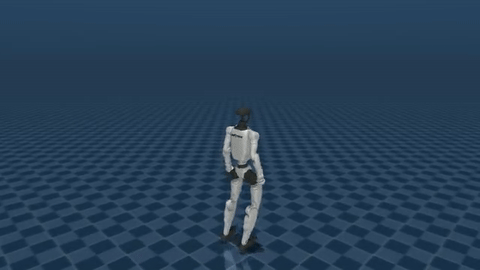
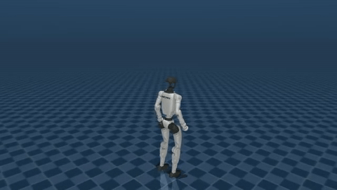
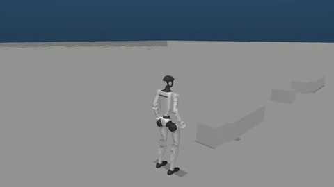

纯学生前进跌倒
原片时间[3.9,11.9)秒；8FPS/64帧；不代表课程成功。

来自已独立审查的58项原生仿真。本页仅保留指定8秒原片区间；不把survival启发式或未触发阈值称为课程成功。视频时间与policy时钟没有逐帧精确映射。
原片时间[3.9,11.9)秒；8FPS/64帧；不代表课程成功。

原片时间[3.9,11.9)秒；8FPS/64帧；不代表课程成功。

原片时间[4.0,12.0)秒；8FPS/64帧；不代表课程成功。
